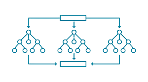
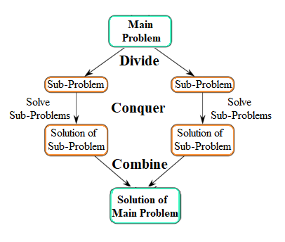
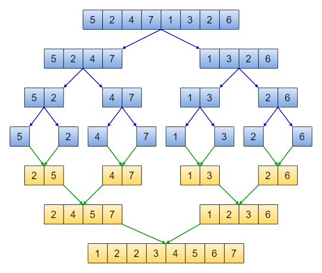

-
O que é Dividir para Conquistar?
Na computação, o termo dividir para conquistar se refere a um certo paradigma de algoritimo. Ele utiliza fundamentalmente do conceito de recursisvidade, isto é, a capacidade de uma função ou método de invocar a si mesmo na sua própria execução. Este recurso permite que este paradigma possa executar a sua tática, que consiste em, dividir recursivamente um grande problema em subproblemas menores, até que finalmente esse problema seja pequeno o suficiente para que possar ser resolvido, e então, todos esses resultados são combinados para formar a solução final.
 -
Explicando o paradigma
Entrando um pouco mais a fundo para explicar melhor o funcionamento desse paradigma, podemos observar que a sua execução se dá através de 3 passos.
- 1- Dividir o grande problema em partes (subproblemas) menores sucessivamente, até que possam ser resolvidos
- 2- Conquistar / Resolver recursivsamente todos esse problemas menores formados
- 3- Combinar o resultado de todos os subproblemas em uma solução final para problema inicial
De forma geral, o paradigma cria pelo menos dois subproblemas fazendo múltiplas chamadas recursivas, esse recurso facilita a resolução de problemas difíceis, pois a complexidade é simplificada ao lidar com partes menores e mais específicas da questão. Isto trás uma maior eficiencia na execução do código, principalmente quando falamos de arquiteturas multithreading.
Quanto a complexidade dessa técnica, partindo de uma entrada de dados n, o processo de divisão terá uma complexidade de O(log(n)), pois se trata de uma divisão consecutiva do problema exatamente ao meio. Já o processo combinatorio será representado por O(n). Logo, a complexidade desse paradigma pode ser definida nomo O(n log(n)).
-
Exemplo
Por fim, para demonstrar uma aplicação do método, temos um algoritimo de mergeSort. Esse algoritimo busca realizar a ordenação de um array por comparação dos seus elementos, para isso, utilizando do paradigma dividir para conquistar.
Seguindo esses conceitos, a execução do algoritimo irá se iniciar com a divisão da entrada inicial (no caso o array de números), ela será dividida ao meio consecutivamente até que se resuma em apenas dois elementos individuais. Então, passamos para o segundo passo, onde esses elementos serão relacionados por meio de uma comparação simples como A ≤ B, que será executada recursivamente. Por fim, no úlitmo passo esses elementos serão novamente combinados, de forma organizada seguindo os resultados das comparações realizadas entre os elementos.
Exemplo pseudocódigomore_vertfunção mergesort (vetor números)
se ( >= 1)
retornar numeros
//dividindo Lista
vetor lista1 = numeros[0] ... a[n/2]
vetor lista2 = numeros[n/2 + 1] ... a[n]
//Chamando recursivamente para dividir
lista1 = mergesort(lista1)
lista2 = mergesort(lista2)
retornar combinar(lista1, lista2)
fim da função mergesort
função combinar (vetor lista1, lista2)
vetor listaCombinada
enquanto (lista1 e lista2 têm elementos)
se (lista1[0] >= lista2[0])
inserir lista1[0] na listaCombinada
remover lista1[0] de lista1
senão
adicionar lista2[0] na listaCombinada
remover lista2[0] de lista2
enquanto (lista1 tem elementos)
adicionar lista1[0] na listaCombinada
remover lista1[0] de listaCombinada
enquanto (lista2 tem elementos)
adicionar lista2[0] na listaCombinada
remover lista2[0] de lista2
retornar listaCombinada
fim da função mesclar